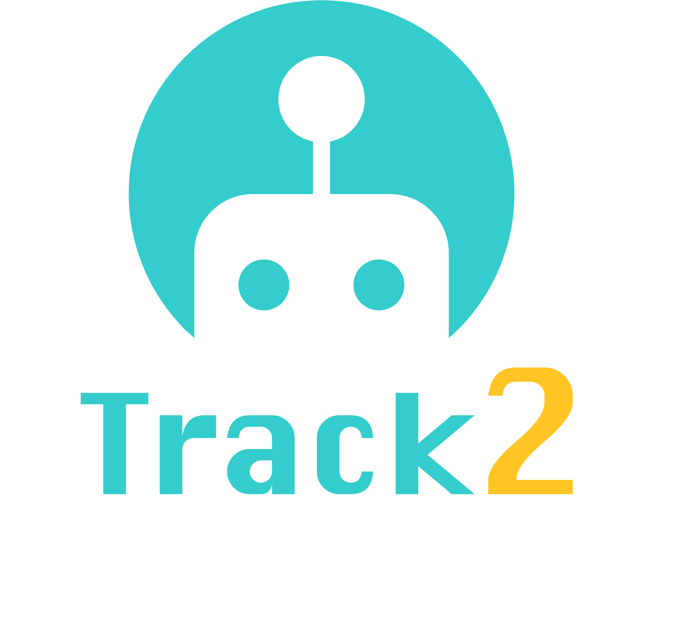

RoboWorld Challenge 2026 · Track #2
HA-VLN 2.0
Human-Aware Social Navigation
Closed-loop RGB-D navigation with socially grounded language and dynamic, interacting humans.

Track #2- Benchmark
- HA-R2R / HA-VLN 2.0
- Setting
- Closed-loop social navigation
- Metrics
- NE, SR, TCR, CR
Introduction
Participants develop agents for vision-and-language navigation in continuous, photorealistic 3D environments populated by dynamic, interacting humans. Given egocentric RGB-D observations and a natural-language instruction referencing ongoing human activities, agents must reach the described goal while maintaining socially compliant distances and avoiding collisions with moving bystanders.
The HA-VLN 2.0 simulator uses fine-grained actions: 0.25 m forward steps and 15-degree turns. Partial observability, interactions among multiple people, and unpredictable human motion require real-time re-planning when corridors or doorways become blocked.
Policy-based agents, imitation or reinforcement learning, waypoint planners, and topological planners are welcome. The track also encourages world models that anticipate human trajectories and future observations, and VLAs that ground human-centric instructions in egocentric video and output low-level actions.
Submission & Timeline
Agents are evaluated through closed-loop interaction with the HA-VLN 2.0 simulator. Packaging requirements and runtime limits will be announced. Submit via the CodaBench portal below.
See the competition timeline for registration and deadlines. Training-data and pretrained-model policies and final reproducibility requirements will be announced.
Submission Portal (CodaBench Server)Dataset & Evaluation Setting
HA-R2R contains 16,844 socially grounded instructions across 90 building scans with 910 annotated human models drawn from HAPS 2.0. Instructions average 112 words, with 20-60% human-related content.
| Split / Test Set | Size | Details |
|---|---|---|
| Training | 10,819 instructions | Training split |
| Validation: seen | 778 instructions | Seen validation environments |
| Validation: unseen | 1,839 instructions | Unseen validation environments |
| Held-out test | 3,408 instructions | 18 unseen buildings; emphasis on multi-human routes |
Evaluation
All submissions are scored server-side on the withheld test split. Test-split ground truth is not released.
Navigation accuracy and social compliance are reported separately. Success requires stopping within 3 m of the goal and completing the episode without collisions. Submissions are ranked by the composite Score defined below.
| Metric | Preferred Direction | Definition |
|---|---|---|
| Navigation Error (NE) | Lower | Final navigation error relative to the goal. |
| Success Rate (SR) | Higher | Episodes that stop within 3 m of the goal and finish without collisions. |
| Total Collision Rate (TCR) | Lower | Frequency of collisions in human-occupied zones. |
| Collision Rate (CR) | Lower | Fraction of human-influenced episodes with at least one collision. |
Composite Score
The composite Score uses the full-precision metrics, with higher scores indicating better performance:
Higher Score ranks first. Exact ties use higher SR, lower NE, lower CR, lower TCR, then earlier submission time. Calculation and comparison retain full precision.
Reference Baselines
HA-VLN-CMA fuses BERT instruction embeddings with ResNet RGB-D features through cross-modal attention and decodes actions using a GRU policy.
Training uses environmental dropout and DAgger to improve re-planning under partial observability and unpredictable human motion. Numerical reference results will be announced.
Track Organizer
Contact
For challenge questions, contact roboworld2026@outlook.com.